ORIGINAL PUBLIC SCENE
直接观看原作毛绒角色
已找到 abstrakt 公开的 ChatGPT dots - Felipe 三维场景。可直接观察原作的毛绒质感，下面的全部自主创作与材质实验继续保留。
Plush Lab / Cycles Material Study
原参考与本轮重做的完整形象放在一起。先看毛绒体积、卷团的自然程度，再看角色轮廓、帽子与眼睛比例。全部旧创作与制作记录继续保留在下方。
完整卷绒角色2026.10.03 · 静态渲染对照
ORIGINAL PUBLIC SCENE
已找到 abstrakt 公开的 ChatGPT dots - Felipe 三维场景。可直接观察原作的毛绒质感，下面的全部自主创作与材质实验继续保留。
FULL PLUSH CHARACTER · 2026.10.03
直接并排看成片。视觉效果仍由你验收，制作完成不代表已经与原图一致。
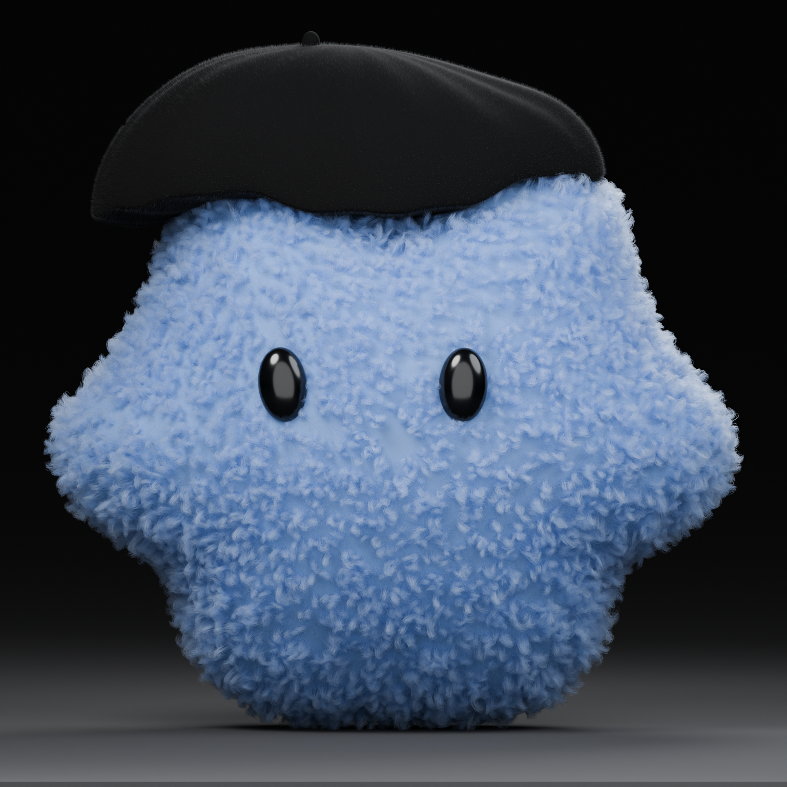
完整角色图片暂不可读取请打开同名 PNG 检查成片。
采用 Blender 原生毛发曲线构造毛绒造型，由 Cycles 计算纤维散射、阴影与光照，输出实际渲染图。本次未做 3D Gaussian Splatting 重建；当前交付为完整角色的静态成片。毛束、形体与光照可在保存的工程中继续编辑，外观仍需对照参考验收。
下方 21 个旧阶段均保留原记录；其中“本轮”“最新”等表述对应当时的历史阶段。当前完整角色见本组并排图。
GN14 / FULL CHARACTER · 2026.10.03
三张实际图片直接判断外观。新候选已完成完整角色渲染；毛料类型有所变化，不能由参数或检查通过推断参考一致。
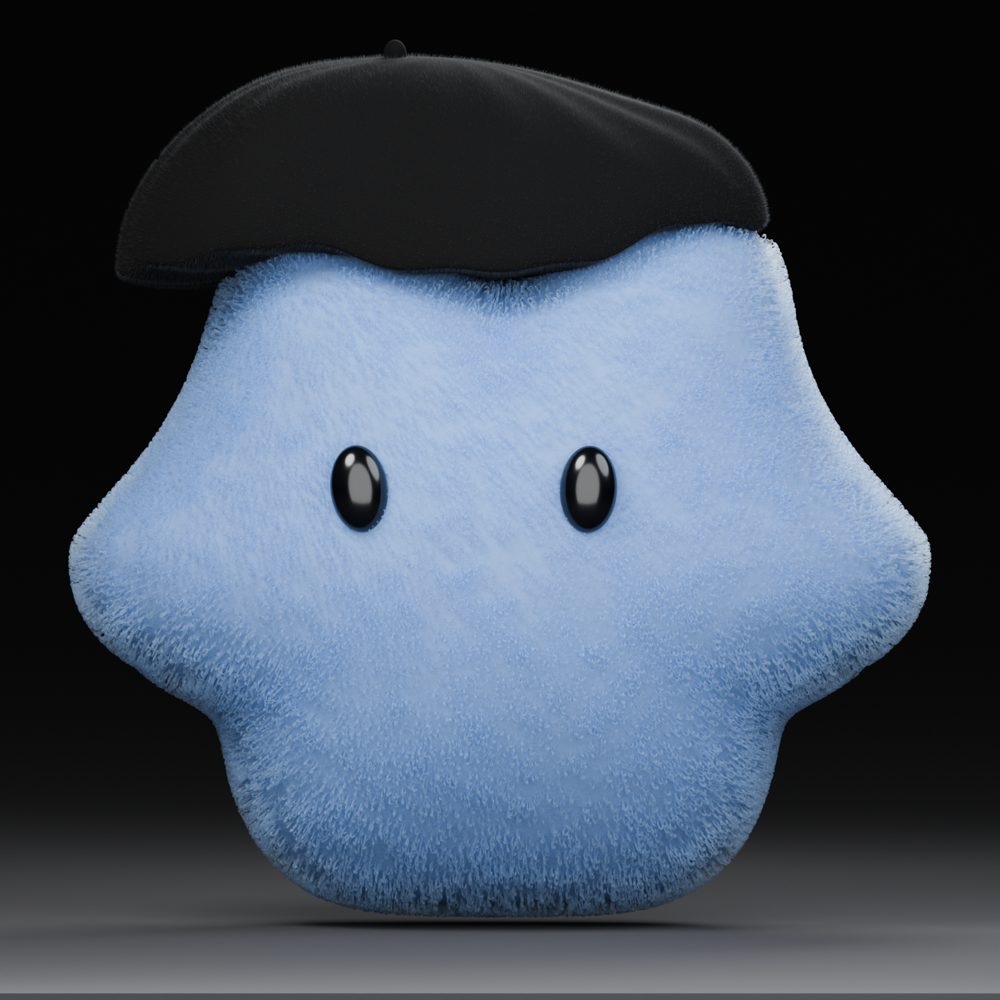
新渲染图暂不可读取工程与实际渲染凭证见下方折叠记录。
实际 GPU 渲染 · 1536 × 1536 · 256 样本上限 · 渲染计时 60.72 秒；不含生成与 CPU 预检。
本轮已经交付完整星仔实图。增加了实际毛层高度、放开束尾并补入柔光；改善最明确的是底部可见性。参考的松厚、不规则卷团仍未达到，帽冠与眼睛比例也有差距。这张是离线静态渲染；原网页与原有作品继续保留。
下方各旧版本段落保留当时的原始结论；其中“最新 v6”描述对应历史阶段。本轮最新完整候选以本组三图为准。
GN14 / SAVED FULL ASSETS
这是两份复合配方。几何与光照共同变化，不能作为单参数 A/B，也不能以工程检查通过代替外观验收。
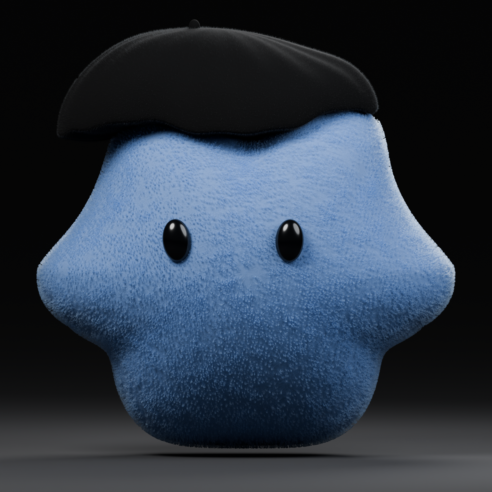
基础候选图暂不可读取请检查同名 PNG。
实际 GPU 渲染 · 1536 × 1536 · 256 样本上限 · 渲染计时 47.08 秒；不含生成与 CPU 预检。
实际 GPU 渲染 · 1536 × 1536 · 256 样本上限 · 渲染计时 60.72 秒；不含生成与 CPU 预检。
320,000 条外绒对应 40,000 条真实导向；每八个原外绒根取一个导向根，子毛以欧氏最近根映射到导向。以实际星形表面法线重新定向，继续保护眼部与帽沿。使用保存的官方 Curl / Clump 沿长配方与 Hair Profile 节点。
子毛与导向的法向分量 × 1.65，导向切向分量 × 1.25；Clump 峰值改为 0.65。新增前下方面积灯，能量 260、尺寸 5。底绒沿用基础配方的 0.35 毛长、飞毛仍隐藏。形体、帽眼与相机沿用原完整工程。
工程、执行源、CPU 预检与实际 GPU 渲染凭证分别保存。独立检查重新加载完整工程，核对实际导向与最近根映射、毛根固定、有限坐标、原尺寸 PNG 和文件 SHA。工程通过不等于舒适感或参考一致。
基础完整角色独立检查：18 / 18 通过。320,000 个最近根映射无差异、40,000 条导向非空，43,923 个根保留眼部与帽沿压绒；原 v6 工程与图片 SHA 保留。独立检查报告 · 独立检查脚本。报告 SHA：4ff43a15fd15d3fe509da0bc5d9f7afa5838e42a667e077f2c58a32a8ecd3919。
增高毛层与柔光完整角色独立检查：18 / 18 通过。从该保存工程独立重载，核对 320,000 个最近导向映射、40,000 条非空导向、实际有限 GN 曲线、毛根法线与压绒字段，以及实际 1536 PNG 和最终渲染凭证；旧 v6 工程与图片 SHA 保持。独立检查报告 · 独立检查脚本。报告 SHA：598c9dadbbc07bda6c974e51bab515c1a20ecbf5a80d1c30cf9832ec49c94a27。两份检查均验证几何与出处，未对舒适感或参考相似度打分。
01 / CHARACTER
检查蓝色卷绒、双肩凹谷、圆臂圆腹、黑色贝雷帽与亮眼睛。单帧截图提供外观方向；相似度仍需由这组图片判断。
1536 × 1536 · 384 样本上限 · 身体毛丝 669,000 + 帽毛 90,000 · 生成与渲染总计 124.65 秒。完整记录见 JSON。
相对完整 v3 的对应表层毛，归一后实际 Catmull–Rom 弧长绝对相对误差 P95 为 0.0001123941%，最大 0.0009804751%。这是几何长度修正，不能据此认定视觉达标。
本页是静态离线渲染对照，v6 仍是最新离线候选。本次完成的是弧长修正：毛层更紧凑，部分长钩纹收敛，但前额仍偏平、毛束偏细碎，下腹偏暗，帽冠宽与眼睛比例也有差距，尚未达到与参考一致的外观目标。本轮没有训练 3DGS，也没有交付可旋转或动态的网页毛发资产；网页转换及其画质、交互与性能尚待评估。
1536 × 1536 · 384 样本上限 · 生成与渲染总计 97.46 秒。
1536 × 1536 · 384 样本上限 · 生成与渲染总计 124.65 秒。
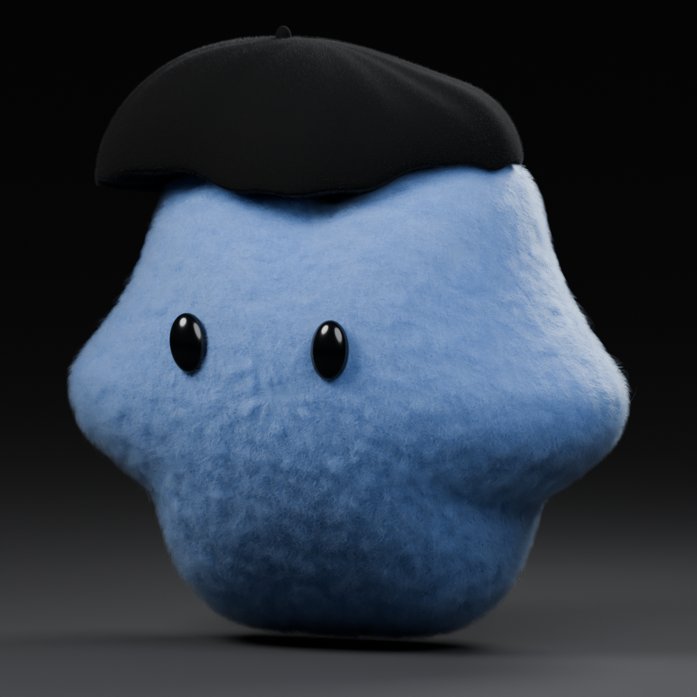
对应渲染图暂不可读取请检查同名 PNG 文件。
1024 × 1024 · 128 样本上限 · 方位偏转 25° · 生成与渲染总计 24.97 秒。完整记录见 JSON。
本机 NVIDIA GeForce RTX 4070 Laptop GPU / OptiX 单次离线记录：v6 正面生成、保存与渲染共 124.65 秒。降噪在 CPU 执行；这些耗时不代表网页帧率或其他设备性能。
前轮完整导向候选保留。
相对完整 v3 的实际弧长漂移 P95 约 73.45%。
02 / MATERIALS
四组均用最终 v3 脚本、相同曲面、正交相机和三盏柔光。A/B/C 同纤维底色；D 同时校正毛丝形态与底色。这是多参数候选比较，点击图片可检查原尺寸细节。
实际渲染设置见参数 JSON。
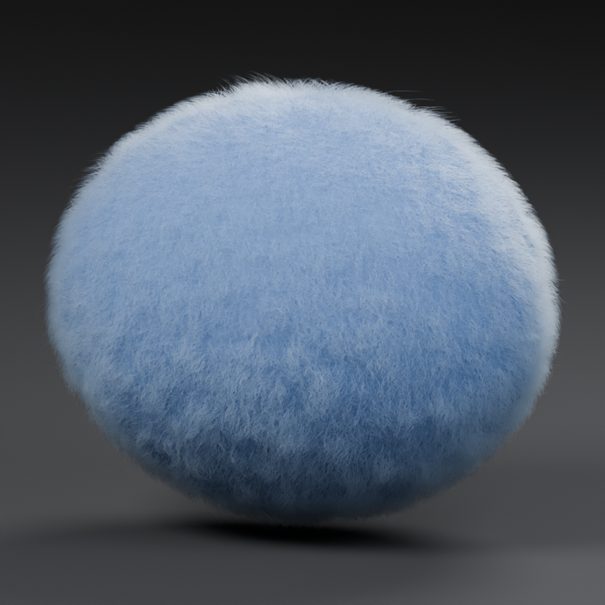
对应渲染图暂不可读取请检查同名 PNG 文件。
实际渲染设置见参数 JSON。
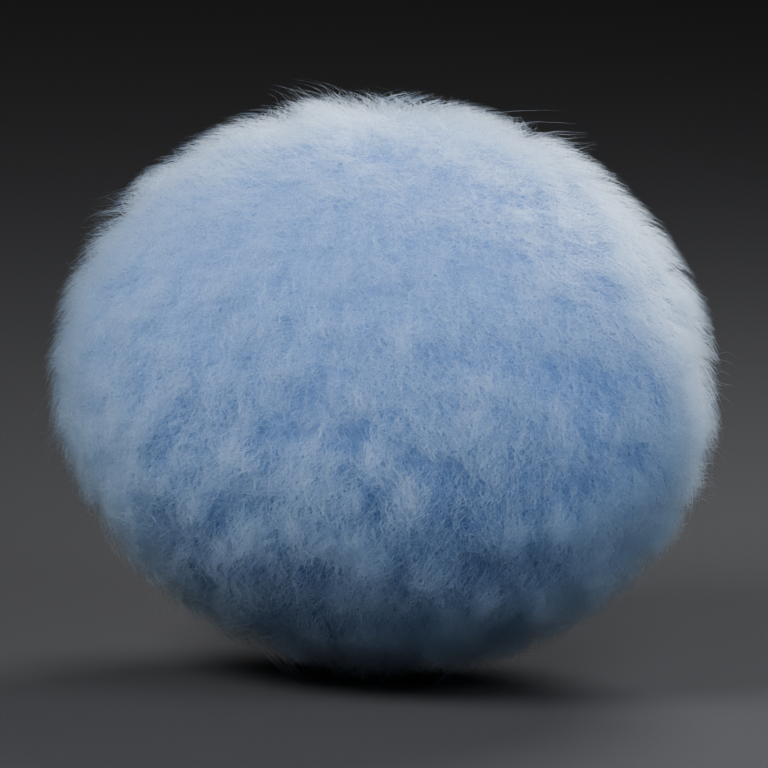
对应渲染图暂不可读取请检查同名 PNG 文件。
实际渲染设置见参数 JSON。
实际渲染设置见参数 JSON。
GUIDE CONTROL / A–B–C–D
本组字母为独立的导向实验编号。冻结 v3 基线、同色材料、灯光、镜头与随机抽样；A/B 只替换收拢目标，B/C/D 保持完整导向目标并改变沿长分布。C→D 同时调整中段与末端，不能归因为单独末端变化。
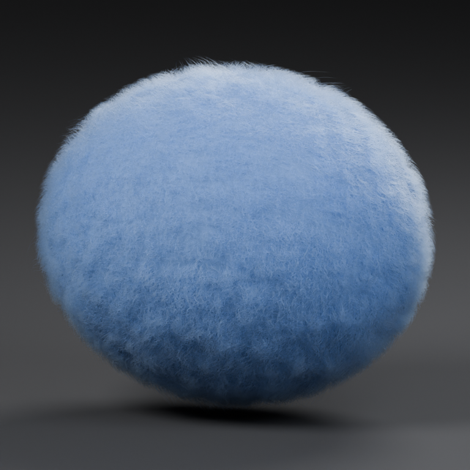
对应渲染图暂不可读取请检查同名 PNG 文件。
768 × 768 · 96 样本上限 · 身体毛丝 177,500 · 生成与渲染总计 10.17 秒。完整记录见 JSON。
768 × 768 · 96 样本上限 · 身体毛丝 177,500 · 生成与渲染总计 12.37 秒。完整记录见 JSON。
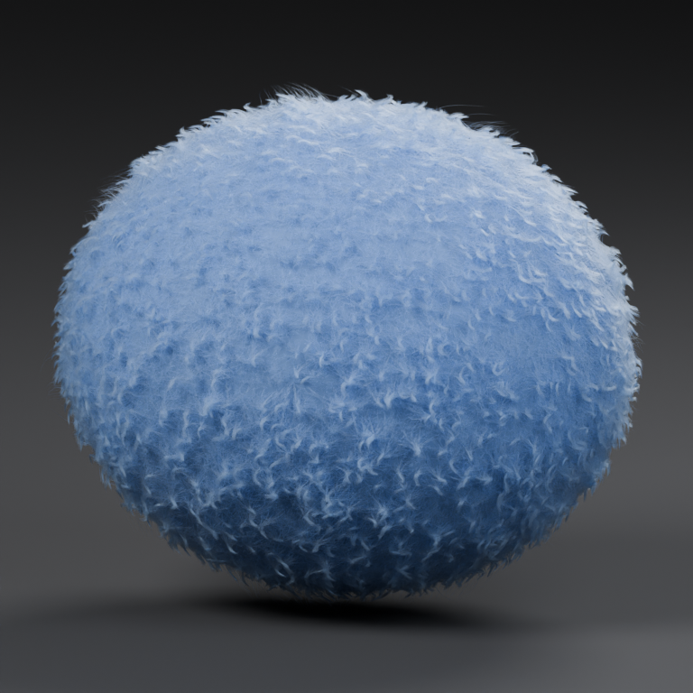
对应渲染图暂不可读取请检查同名 PNG 文件。
768 × 768 · 96 样本上限 · 身体毛丝 177,500 · 生成与渲染总计 9.74 秒。完整记录见 JSON。
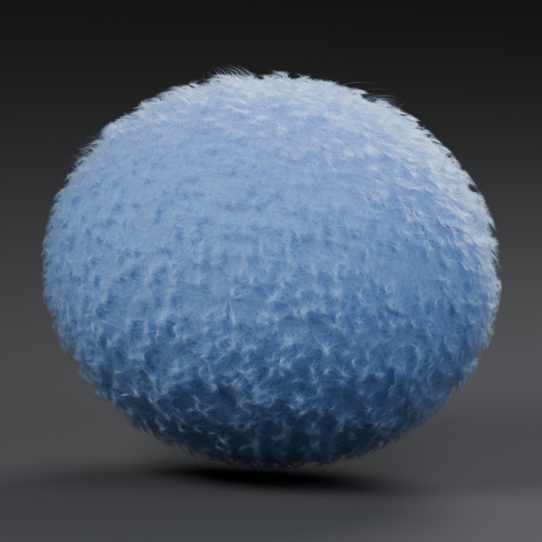
对应渲染图暂不可读取请检查同名 PNG 文件。
768 × 768 · 96 样本上限 · 身体毛丝 177,500 · 生成与渲染总计 9.70 秒。完整记录见 JSON。
导向实验 A/B/C/D 与上方四种毛料 A/B/C/D 分别编号。此组均为 768 × 768、96 样本上限、177,500 根身体毛丝，Chiang / COLOR / #6b8bd4、灯光、镜头和随机抽样相同。每份保存 2,657 条隐藏导向曲线，不参与渲染；毛根、短底绒、飞毛与半径保持相同。固定的是生成长度抽样，实际弧长会改变。
A/B 仍偏均匀短毡。C 的小卷束更清楚，但细亮紧钩重复感明显；D 相对 C 外层更松散，紧钩减少，小卷束仍可辨。C→D 的中段、末端强度同时变化，结果不能只归因于末端放松；与参考仍未一致。
按保存的 float32 控制点积分 Catmull–Rom 弧长，相对导向 A 的绝对相对漂移 P95：B 约 19.81%，C 约 65.70%，D 约 79.50%。这些结果不保持实际毛长；本实验尚不构成参考一致、网页转换或 3DGS 训练成果。
A/B：α(t) = 0.6 × t²
中段 t = 0.5 → 15%；末端 t = 1 → 60%。
C：β(t) = 0.90 × smoothstep(clamp(t / 0.60, 0, 1))
中段 t = 0.5 → 83.33%；末端 t = 1 → 90%。
D：β(t) = .88 × smoothstep(clamp(t / .52, 0, 1))
× (1 − .30 × smoothstep(clamp((t − .55) / .45, 0, 1)))
中段 t = 0.5 → 87.62%；末端 t = 1 → 61.60%。
四份样片报告都以导向 A 为弧长基线；C/D 报告中的 b 字段表示该份完整导向输出。
完整角色则以完整 v3 为弧长基线，不能与样片漂移直接混用。
数值检查通过支持控制条件与几何公式成立，不等于视觉已达到参考。脚本导向与长度实验的可复跑原生工程检查 ↗：10 个工程、589/589 项通过，覆盖 A/B/C/D/E、完整 v4/v5/v6 与两个基线，不包含下方 GN 候选。独立积分核对 E/v6 每丝实际弧长，毛根最大误差为 0，E/v6 所有表层毛的相对弧长误差小于 0.0001；58 个输入文件读取前后 SHA 相同。工程与长度检查不等于画质验收，也不证明物理或 FTL 模拟。
前轮检查 v2：8 个工程、445/445 项通过 ↗，尚不包含 E 与完整 v6。初次完整检查：未全部通过，网格存储顺序差异 ↗。后续检查保留顶点、绕序、材质、平滑与重复数量，只规范化边和面的存储顺序；没有把画质差距作为工程检查通过项。初期样片工程检查 ↗另行保留。
LENGTH CONTROL / D → E
独立两列对照。E 保持 D 的 soft-tip 分布、导向、毛丝数量、半径、材质、灯光与镜头，在生成 D 后增加整条表层曲线的几何缩放，将每丝弧长恢复到导向 A 的测量值。
768 × 768 · 96 样本上限 · 身体毛丝 177,500 · 生成与渲染总计 9.70 秒。完整记录见 JSON。
768 × 768 · 96 样本上限 · 身体毛丝 177,500 · 生成与渲染总计 15.00 秒。完整记录见 JSON。
按保存的 float32 Catmull–Rom 控制点、每段 32 点 Gauss–Legendre 积分，相对导向 A，E 的绝对相对弧长误差 P95 为 0.0000507684%，最大为 0.000184364%。毛根逐位保持相同；短底绒、飞毛和半径不变。
这是以毛根为中心的整条曲线几何缩放，会同时改变该丝的整体卷曲尺度与空间范围。它不是 FTL 或物理求解，也不等于完整 groom；本轮数值检查支持长度约束成立，不代表外观已达到参考。
Yᵢ = pᵢ + (L_Aᵢ / L_Dᵢ) × (Dᵢ − pᵢ) pᵢ：固定的毛根；L_Aᵢ：导向 A 中对应毛丝的实际弧长。 L_Dᵢ：同一毛丝在 soft-tip 导向变形后的实际弧长。 相对误差采用 (L_Eᵢ − L_Aᵢ) / L_Aᵢ。 E 报告 coat.arc_length.post_normalization： absolute_relative_drift_p95 = 5.076838404925949e−7（0.0000507684%） absolute_relative_drift_max = 1.8436373255591118e−6（0.000184364%） 报告中的未归一 b 与 pre_normalization 仍保存 D 的漂移；不能把它们当成 E 的最终误差。 复现样片时增加 --preserve-arc-length，并使用新的 tag： blender -b --python tooling/blender/plush_groom_ab.py -- --mode curve --profile soft-tip --preserve-arc-length --kind swatch --variant reference --resolution 768 --samples 96 --tag review-length-1
METHOD CANDIDATES / E · GN1 · GN2
本区是多项结构改变的独立路线比较。GN 加入人工导向形状、live Geometry Nodes、较短长度预算和更饱满的半径分布；GN2 还调整导向、法线与节点参数，不能称为纯单变量 A/B。
768 × 768 · 96 样本上限 · 身体毛丝 177,500 · 生成与渲染总计 15.00 秒。
768 × 768 · 96 样本上限 · 身体毛丝 177,500 · 生成与渲染总计 15.28 秒。
768 × 768 · 96 样本上限 · 身体毛丝 177,500 · 生成与渲染总计 18.35 秒。
三份均为 768 × 768、96 样本上限、177,500 根渲染毛丝，材质 Chiang / COLOR / #6b8bd4、灯光与相机沿用基线。GN 的 2,657 条导向参与节点求值，随后从渲染输出删除；它们不计入渲染毛丝总数。GN 表层毛仍为每丝 12 个控制点，短底绒与飞毛几何保持基线。
导向对象经 Object Info 实时接入：Curl Hair Curves → Clump Hair Curves → Restore Curve Segment Length → Set Hair Curve Profile；之后删除临时导向组件并精确锁回毛根。修改独立导向会影响其 32 根子毛，节点参数也可在 .blend 的修改器中编辑。
GN1/GN2 的短毡读感和弱卷束仍明显，与参考厚实的小卷绒有差距。这两份仅为离线毛料小样，未替换 v6 完整角色、未建立表面 UV 附着或形变绑定，也没有物理求解、FTL 或网页资产交付。
| 实际 GN 参数 | GN1 · live | GN2 · 开放导向 |
|---|---|---|
| 人工导向原型 | 3 种原型，按组轮换 | 开放 C/C/S；成员法线归一 |
| 目标输入长度预算 | 对应 v3 实测 Catmull–Rom 弧长的 0.70 倍 | |
| Curl · Factor / Radius / Frequency | 0.55 / 0.002 / 1.20 | 0.70 / 0.006 / 0.85 |
| Clump · Factor / Shape / Tip Spread | 0.72 / 0.35 / 0.003 | 0.88 / 0.20 / 0.003 |
| 半径分布 Min / Max | 0.55 / 1.00；实际末端 / 毛根半径约 0.55 | |
| 最终表层毛平均实际弧长 | 0.0400390 | 0.0401054 |
| 相对各自 rest 弧长的绝对变化 P95 | 约 0.85935% | 约 1.03322% |
| 相对各自 rest 弧长的绝对变化最大值 | 约 1.30897% | 约 1.79817% |
运行 JSON 的 preset 是冻结的 D 基线生成参数，不等于最终 GN groom。实际节点输入、候选参数和 evaluated 几何请读取各自 .gn-report.json。Restore 节点约束的是控制点间的段长度，最终 Catmull–Rom 弧长另行积分；GN 的 rest 基线与 E 的导向 A 基线不同，误差不能直接混用。
GN1 独立工程检查 ↗：99/99 项通过、11 个输入文件 SHA 未变。另选第 1,328 条导向的控制点 6 做可逆探针，影响该组 32 根子毛、组外 0 根，恢复后求值逐位一致，毛根保持固定；这些检查不包含视觉验收。
GN2 独立工程检查 ↗：100/100 项通过、11 个输入文件 SHA 未变。85,000 根表层毛、每丝 12 点，求值后毛根逐位保持固定；第 1,328 条导向的控制点 6 沿 X 移动 0.002，仅影响该组 32 根子毛，组外 0 根，最大位移 0.00682805，恢复后求值逐位一致。GN2 所有 rest 曲线符合名义 70% 长度预算，最大绝对相对误差约 0.0002125425%；最终求值相对 rest 的弧长变化 P95 约 1.03322%、最大约 1.79817%，不属于实际弧长守恒。工程检查通过不代表视觉验收。
读取实际几何诊断 JSON ↗。GN2 正面外绒毛冠高度中位数约 0.01135，底绒为 0.01454；77.6% 的外绒毛冠低于其局部底绒 P95 高度。逐丝高于这一几何包络的弧长比例平均仅约 5.15%，这些是空间关系指标，不能读作像素可见率。
GN2 中 51.21% 的外绒曲线至少有一个采样点深入解析椭球超过 0.001 场景单位；处于该深度以下的弧长比例平均约 13.37%。同口径的 E 与 v3 为 0。原分组毛根在切平面内的 RMS 中位数约 0.03182，大于导向毛根最近邻距离中位数 0.01720；GN2 毛丝中段切向 RMS 为 0.02482，E 为 0.01120。更强的节点参数尚未形成紧凑的空间毛束。
本诊断只读取保存及节点求值后的 Curves，每个 Catmull–Rom 段使用 8 个 Gauss–Legendre 采样点。距离来自隐式椭球函数除以梯度的近似，并非精确最近表面投影；局部底绒包络是毛根表面分区中的毛冠 P95 高度，并非不透明壳层，也不是逐像素遮挡测试。所有数值使用未标定的 Blender 场景单位，不能单独作为视觉验收或改法后效果的证明。
工程使用 Blender 安装包的 procedural_hair_node_assets.blend 中 Hair 节点组。GN1 检查中 11 个节点树的 library 均为 null，弱来源信息与结构检查记录在报告中；不能把 library = null 单独当作强来源证明。GN1 与 GN2 的当时逻辑分别保存在同名 .gn-source.py，冻结基线在 .source.py；当前生成器可能继续变化，复现旧候选应使用对应版本快照。
Blender 官方 Hair Nodes 手册 ↗说明节点能力。节点工程可编辑与保存；本页仍只是 PNG 对照，没有把 live 节点运行在浏览器中。
GUIDE MAPPING / GN2 → GN3
这组保持 GN2 的 rest 曲线、导向形态、半径、节点参数、毛根与其他毛层，仅把 child→guide 映射换为最近毛根。它与上方 E/GN1/GN2 的多结构路线比较分开记录。
768 × 768 · 96 样本上限 · 身体毛丝 177,500 · 生成与渲染总计 18.35 秒。
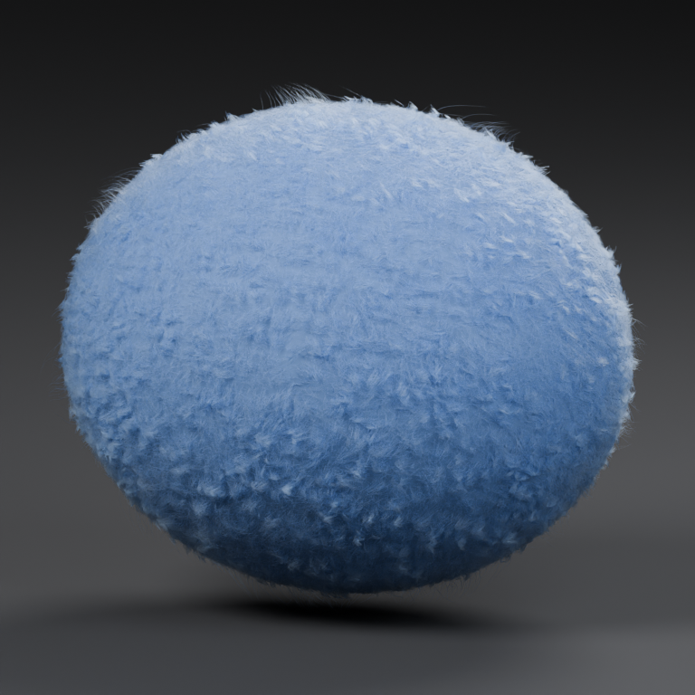
对应渲染图暂不可读取请检查同名 PNG 文件。
768 × 768 · 96 样本上限 · 身体毛丝 177,500 · 生成与渲染总计 17.94 秒。
最近映射使用保存的 float32 毛根坐标，以 float64 计算三维欧氏距离；等距时选择最小导向编号。两对象变换均为单位变换；此处不是表面测地距离或 UV 距离。导向曲线仍保留 GN2 原形与原分组长度预算，不按新成员重新生成。rest、导向、半径、底绒与飞毛保持 GN2 原数据；节点参数仍为 Curl 0.70 / 0.006 / 0.85、Clump 0.88 / 0.20 / 0.003。
| 同口径几何测量 | GN2 · 原映射 | GN3 · 最近根映射 |
|---|---|---|
| 毛根至所属导向根 · 三维距离 RMS | 0.03261 | 0.01746 |
| 外绒正面毛冠高度中位数 | 0.01135 | 0.01316 |
| 深入椭球超过 0.001 的平均弧长比例 | 约 13.37% | 约 7.35% |
| 高于局部底绒 P95 包络的正面平均弧长比例 | 约 5.15% | 约 6.39% |
本表 RMS 是逐根到所属导向根的三维距离；它与上一诊断中“每组切向根云 RMS 的中位数 0.03182”是不同统计量。高度仍由解析椭球函数 / 梯度近似，每个 Catmull–Rom 段 8 点采样；局部底绒 P95 是几何包络，不是逐像素遮挡，弧长比例不是像素可见率。几何指标变化与图像外观需分别判断。
GN3 独立保存工程检查 ↗：120/120 项通过、14 个输入文件 SHA 前后相同。85,000 根子毛的最近导向编号独立核算正确；除两个映射属性外，保存的 rest、导向、半径、其他属性、底绒、飞毛、非外绒对象、节点树及修改器与 GN2 相同。四个官方组匹配；11 个本地树中的 10 个有弱来源信息，这不等于强链接依赖。
独立检查使用导向 1,328、控制点 6 沿 X 移动 0.002，所属 42 根子毛全部响应，最大位移约 0.00660835；所属集合以外坐标与半径逐位不变，毛根固定，恢复后求值逐位相同。这与生成时导向 0 的 39 根子毛探针分别记录。GN3 最终求值相对 rest 的实际弧长绝对变化 P95 约 1.08363%、最大约 1.87497%，仍不属于实际弧长守恒；检查通过不代表参考外观达标。
UNDERCOAT / GN3 → GN4
GN4 从保存的 GN3 工程出发，仅将 90,000 根底绒各点绕固定毛根缩放至 0.35 倍，横向范围也随之收缩。外绒、导向、毛根、半径、毛丝数量、材质、相机与灯光保持原样。
768 × 768 · 96 样本上限 · 身体毛丝 177,500 · 生成与渲染总计 17.94 秒。
实际 GPU 渲染 · 768 × 768 · 96 样本上限 · 渲染计时 11.68 秒；不含生成与 CPU 预检。
| 几何测量与预测口径 | GN3 · 原底绒 | GN4 · 0.35 倍底绒 |
|---|---|---|
| 底绒毛冠高度中位数 | 0.01455 | 0.00493 |
| 正面外绒高于局部底绒 P95 包络的平均弧长比例 | 约 6.39% | 约 55.15% |
| 正面外绒毛冠低于局部底绒 P95 包络的比例 | 约 75.04% | 约 5.87% |
| 外绒深入椭球超过 0.001 的平均弧长比例 | 约 7.35% | 约 7.35% · 外绒未改变 |
上表来自几何预测与预检测量，采用解析椭球函数 / 梯度距离近似，每个 Catmull–Rom 段 8 点采样。局部底绒 P95 是几何包络，不是不透明壳层；55.15% 不是像素覆盖或可见率。缩短底绒没有修正外绒入模，外绒的空间形态也未改变。
GN4 的 .json 与 .gn-report.json 保留 CPU 预检当时的 rendered: false。实际 GPU 渲染另存 .render.json，记录 rendered: true、11.6844513 秒及 PNG / .blend / 源 SHA；预检记录没有被改写成渲染成功。此计时与其他样片的“生成与渲染总计”不同，不能直接比较流程速度。
GN4 独立保存工程检查 ↗：147/147 项通过、15 个输入文件 SHA 前后相同。独立探针将导向 1,328 的控制点 6 沿 X 移动 0.002，仅其 42 根子毛改变，所属集合外为 0；毛根保持固定，恢复后求值逐位相同。检查覆盖底绒缩放约束与真实渲染凭证，画面仍是候选，不作为参考一致或网页资产的验收结果。
EXTERNAL RESTORE / GN4 → GN5
GN5 从保存的 GN4 工程出发，仅将外接 Restore Curve Segment Length 的 Factor（Input_3）从 1 改为 0。Clump 内部 Preserve Length 继续开启；0.35 倍底绒、原生导向和其他节点输入保持相同。
实际 GPU 渲染 · 768 × 768 · 96 样本上限 · 渲染计时 11.68 秒；不含生成与 CPU 预检。
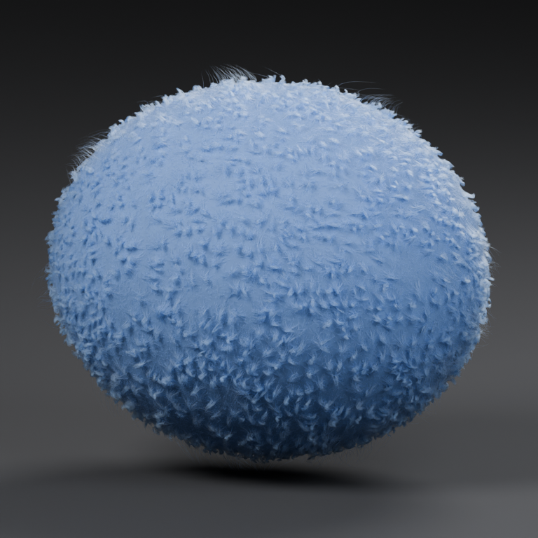
对应渲染图暂不可读取实际 GPU 凭证见下方链接。
实际 GPU 渲染 · 768 × 768 · 96 样本上限 · 渲染计时 10.19 秒；不含生成与 CPU 预检。
| 逐节点与最终几何测量 | GN4 · Factor 1 | GN5 · Factor 0 |
|---|---|---|
| 全表层毛冠高度中位数 · 阶段诊断 | 0.01316596 | 0.01616611 |
| 有采样点深入椭球超过 0.001 的曲线比例 | 约 44.5176% | 约 0.3294% |
| 深入超过 0.001 的平均弧长比例 | 约 7.3546% | 约 0.00930% |
| 相对原直丝 rest 的实际弧长绝对变化 P95 | 约 1.08363% | 约 41.60948% |
| 相对原直丝 rest 的实际弧长绝对变化最大值 | 约 1.87497% | 约 121.80261% |
唯一修改的输入是外接 Restore Factor。原生毛丝、导向、半径及根半径保持固定；下游 Set Hair Curve Profile 的输入保持相同，但曲线参数随求值几何改变，造成约 85.2117% 的表层控制点求值半径发生变化，最大差约 0.0000721943。不能将“原生半径不变”写成“所有求值半径不变”。Clump 内部 Preserve Length 使用其自身的 pre-clump 参考，不等于保留本工程原直丝 rest 的 Catmull–Rom 弧长。
对保存的 GN4 做只读阶段求值：Curl 后深陷曲线比例为 0%，Clump 后约 0.3294%，外接 Restore 后约 44.5176%。在这套直丝 rest、导向形态与节点链中，外接参考段长恢复对应明显下陷；GN5 关闭该输入后，结果回到约 0.3294%。这是该工程的对照结论，未推广为官方节点故障。
Blender 官方 Restore 文档 ↗：Factor 0 保持当前曲线，Factor 1 恢复参考段长。高度诊断仍使用解析椭球函数 / 梯度近似及每段 8 点采样；0.001 使用对象 / 场景单位，尚未标定为实物尺寸。比例是几何指标，不是逐像素遮挡或覆盖率。
逐节点诊断 JSON 保存原先 CPU 只读会话的实际输出转录；对应测量源 SHA 与当时 Temp 源相同，.stage-source.py 与 .stage-provenance.json 保留来源。此次保留没有重新测量，也没有写入或渲染工程。GN5 的 .json 与 .gn-report.json 仍为冻结预检 rendered: false；实际 GPU 凭证另存 .render.json，rendered: true，计时 10.1932199 秒。
GN5 独立保存工程检查 ↗：132/132 项通过、17 个输入文件 SHA 前后相同。实测 869,159 个表层控制点的求值半径改变（约 85.2116667%），最大差 0.0000721943215。独立探针修改导向 1,328 的控制点 6，仅所属 42 根子毛响应，最大位移约 0.00391885，集合外为 0；毛根固定，恢复后求值逐位相同。
独立 32 阶 Catmull–Rom 积分复核：相对原直丝 rest 的实际弧长绝对变化 P95 为 41.6094808%，最大 121.8026092%。这些漂移是实测限制，132 项工程检查通过不能表述为长度保持通过，也不构成参考外观验收。完整角色主展示保留 v6；GN4 的 147 项报告继续单独保留。
TIP SPREAD / GN5 → GN6
从保存的 GN5 出发，只修改 Clump 的 Tip Spread 输入。原生毛丝、导向形态与映射、底绒、飞毛、材质、镜头、灯光及其他节点输入保持相同；此实验没有重新塑造导向。
实际 GPU 渲染 · 768 × 768 · 96 样本上限 · 渲染计时 10.19 秒；不含生成与 CPU 预检。
实际 GPU 渲染 · 768 × 768 · 96 样本上限 · 渲染计时 7.03 秒；不含生成与 CPU 预检。
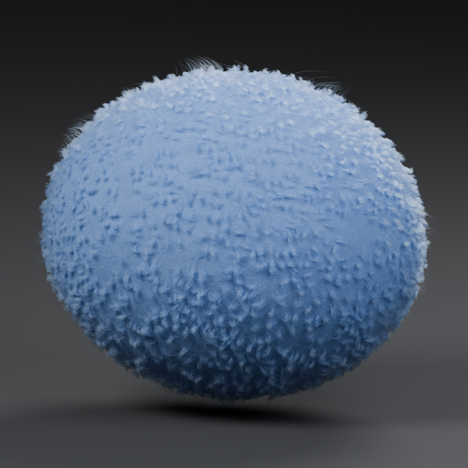
对应渲染图暂不可读取实际 GPU 凭证见下方链接。
实际 GPU 渲染 · 768 × 768 · 96 样本上限 · 渲染计时 14.24 秒；不含生成与 CPU 预检。
同条件：768 × 768、96 样本上限，85,000 条外绒 + 90,000 条底绒 + 2,500 条飞毛，2,657 条 live 导向；Clump Factor 0.88、Shape 0.20，Curl Factor 0.70 / Radius 0.006 / Frequency 0.85，底绒 0.35 倍，外接 Restore Factor 0。毛根和原生半径保持固定；求值后的毛丝位置与半径可能随这一输入变化。
| 实测结构指标 | GN5 · 0.003 | GN6 · 0.006 | GN6 · 0.009 |
|---|---|---|---|
| 唯一变化的 Tip Spread 输入 | 0.003 | 0.006 | 0.009 |
| 控制点 9 法平面 minor / major 标准差比 · 中位数 | 0.551912 | 0.670692 | 0.736117 |
| 控制点 9 法平面 minor 标准差 · 中位数 / 场景单位 | 0.00214678 | 0.00283832 | 0.00359930 |
| 控制点 3 法平面 minor / major 标准差比 · 中位数 | 0.592009 | 0.624274 | 0.661319 |
| 控制点 6 法平面 minor / major 标准差比 · 中位数 | 0.537072 | 0.587049 | 0.623786 |
| 全表层毛冠高度中位数 · 场景单位 | 0.01616611 | 0.01610562 | 0.01601917 |
| 有采样点深入椭球超过 0.001 的曲线比例 | 约 0.3294% | 约 0.6612% | 约 1.8388% |
法平面指标由独立验证器读取三个保存工程，在相同控制点位置将子毛中心投影到原生导向中央差分切线的法平面，再计算协方差轴的标准差。纳入至少 6 根子毛的 2,652 组、84,982 条子毛，排除 5 组中的 18 条子毛。它是中心线分布的几何近似，不包含每根毛丝半径，不能当作实体卷束体积、光学覆盖率或外观验收。高度与深入比例来自各自预检 / 阶段诊断，仍使用解析椭球函数 / 梯度近似及每段 8 点采样；单位尚未标定为毫米。
| 中心云最小 / 最大标准差比 · 中位数 | GN5 · 0.003 | GN6 · 0.006 | GN6 · 0.009 |
|---|---|---|---|
| 控制点 5 | 0.22645 | 0.32523 | 0.40778 |
| 控制点 8 | 0.31282 | 0.43224 | 0.51628 |
| 控制点 11 | 0.27058 | 0.42104 | 0.50707 |
此表在对应控制点位置计算三维子毛中心协方差，纳入至少 8 根子毛的 2,644 组，覆盖 99.92% 子毛；基线来自保留源的 CPU 只读重放，GN6 数据来自各自预检报告。它包含三维中心位置的分布，没有投影到导向法平面，不能与上表的控制点 3 / 6 / 9 法平面比值混用，也不是实体体积。
Blender 官方 Clump 文档 ↗说明 Factor 控制向导向收紧的整体强度，Tip Spread 在毛尖位置加入随机变化。本工程中它是固定 Curve ID 随机向量在导向坐标系内的空间位移幅度，发生在内部长度恢复之前；0.006 / 0.009 使用场景坐标单位，不是百分比或无量纲的毛根偏移比。
本轮强 Clump 与原有薄导向继续保持。只读诊断中，导向位移的最小 / 最大奇异值比中位数约 0.01387，中间 / 最大比约 0.27318，仍接近扁平造型。改变 Tip Spread 没有把这些导向重新塑造成厚实体积；两张真实渲染整体仍薄碎，不能把中心云比值变化写成大幅视觉改善。
机制记录是使用保留的原测量源进行一次不保存、不渲染的 CPU 重放，并保留真实 stdout；输入 SHA 前后一致，内存输入与求值恢复逐位相同。它还单独试探了 Clump Factor 与 Curl Radius，这些试探没有作为本轮渲染候选。机制重放不等于对保存的 GN6 工程进行独立验证。
两张成功候选使用 live2-6 文件名，各自 .json 与 .gn-report.json 保留 CPU 预检 rendered: false；实际 .render.json 为 rendered: true，记录 7.0300123 秒 / 14.2369889 秒的 GPU 渲染计时。报告中的 candidate_parameters 保留基线 Tip Spread 0.003，实际保存输入请读 tip_spread_change.after。完整角色主展示继续保留 v6；本节是静态离线毛料实验。
CPU 只读诊断用自定义 RenderEngine 取得实际 RENDER 模式依赖图：三份保存工程的 85,000 条外绒位置与半径在 VIEWPORT / RENDER 两种模式下分别逐位相同，外绒修改器在渲染中启用，辅助导向不直接显示。相对 GN5，0.006 / 0.009 的 91.6667% 求值控制点位置改变，最大位移分别约 0.00609729 / 0.00980295；毛根逐位相同，求值半径变化比例分别约 85.08196% / 85.13618%。
这段记录保留原 CPU 会话 stdout 的逐字转录，不是再次测量，也没有调用 Cycles / GPU、保存新图或工程；初始读取工程的 stdout 不在转录范围内。它证明渲染依赖图求值与开关一致，不是追踪 Cycles 内部毛丝同步或像素遮挡。仅凭图像差异小，不能认定节点没有参与渲染。
GN6 独立保存工程检查 ↗：130/130 项通过、22 个输入文件 SHA 前后相同；验证两个成功 live2-6 候选的真实渲染凭证、唯一输入变化、固定的原生数据与其他场景条件。独立探针将导向 1,328 的控制点 6 沿 X 移动 0.002，两工程均只影响所属 42 条子毛，最大位移分别约 0.00367626 / 0.00355588，集合外为 0；毛根保持固定，恢复后求值逐位相同。
130 项工程检查不确立实体体积、样条弧长保持或视觉达标。Tip Spread 输入、三维中心云、法平面中心线分布与真实图像分别提供不同证据；本轮两张样片都仍未达到参考厚实卷团。
STRUCTURAL GROOM / GN5 → GN7
保留 GN5 的节点、材质与拍摄条件，重新制作导向的空间回返造型。两张 GN7 样片使用同一公式，只比较侧向幅度系数 0.08 与 0.16。
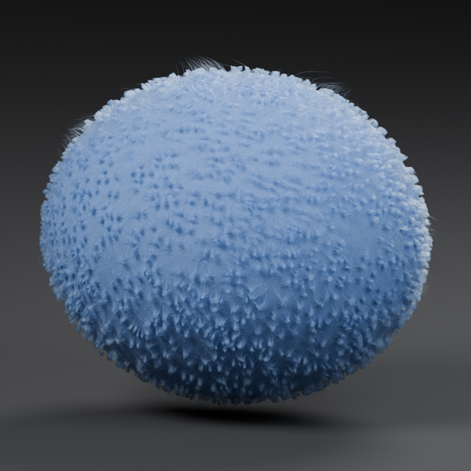
对应渲染图暂不可读取展开下方查看实际 GPU 凭证。
先看真实图：两张候选均比 GN5 更立起，仍未达到参考的厚实、柔软短卷绒。参考是完整角色截图，这里是球状毛料小样，形状与视角不同，只评毛料；不据此验收角色比例、参考匹配或实体卷束体积。完整角色主图继续保留 v6。
三图均为 768 × 768、96 样本上限。两张 GN7 仅重新写入 2,657 条导向的非根 position，根位置逐位保持；历史 rest_position、原生半径、子毛映射、原生外绒、底绒 / 飞毛、其他场景、GN 节点与 Tip Spread 0.003 固定。求值后的外绒位置与半径会随导向改变。
实际 GPU 渲染 · 768 × 768 · 96 样本上限 · 渲染计时 10.19 秒；不含生成与 CPU 预检。
实际 GPU 渲染 · 768 × 768 · 96 样本上限 · 渲染计时 15.50 秒；不含生成与 CPU 预检。
实际 GPU 渲染 · 768 × 768 · 96 样本上限 · 渲染计时 14.89 秒；不含生成与 CPU 预检。
两份 .json 与 .gn-report.json 保留 CPU 预检 rendered: false；真实 GPU .render.json 为 rendered: true，渲染计时分别 15.5024643 秒 / 14.8938056 秒，不含生成与 CPU 预检。两张 GN7 使用同一冻结源快照，SHA 为 ce8d69473c06f0365b75fe3c4e3de3b87988720aeacd30757e2a183b10d22a60；实际幅度读 guide_change.amplitude。
| 几何测量 · 不是视觉分数 | GN5 | GN7 · 0.08 | GN7 · 0.16 |
|---|---|---|---|
| 外绒毛冠高度中位数 · 场景单位 | 0.01616611 | 0.02108049 | 0.02068123 |
| 有采样点深入椭球超过 0.001 的外绒曲线比例 | 约 0.3294% | 约 0.06118% | 约 0.03059% |
| 导向实际弧长 / 旧导向弧长 · 中位数 | 1.00000 | 1.05414 | 1.15587 |
| 控制点 9 自身导向法平面 minor / major 标准差比 · 中位数 | 0.551912 | 0.601444 | 0.580768 |
| 控制点 9 冻结 GN5 法平面 minor / major 标准差比 · 中位数 | 0.551912 | 0.598762 | 0.574660 |
| 相对历史原生 rest 的外绒实际弧长绝对漂移 P95 | 约 41.60948% | 约 44.00545% | 约 45.07706% |
| 相对历史原生 rest 的外绒实际弧长绝对漂移最大值 | 约 121.80261% | 约 122.57927% | 约 125.25113% |
高度采用解析椭球函数 / 梯度近似及逐段采样，不是逐像素覆盖率或接触检测；0.001 是对象 / 场景单位，尚未标定为毫米。导向与外绒弧长使用保存的 float32 控制点、重复端点、32 阶 Catmull–Rom 积分。新形态没有输出弧长归一，历史 rest_position 未改也不意味着长度约束成立；不能称缩短、保长或实体体积通过。
法平面中心线分布由独立验证器测量。自身导向帧会随造型变化，冻结 GN5 帧另作对照；它们是不同坐标系的几何近似，不包含毛丝半径，不能将非平面直接等同于更圆的实体卷团或视觉改善。
先由旧导向实际弧长 L 建立尺度，在根部椭球法向 n 与切向 e₁ / e₂ 构成的局部坐标系中制作立起、侧向摆动、回返的三种原型，按导向编号轮换。0.08 / 0.16 是侧向项相对 L 的幅度系数，并非场景单位 0.08 / 0.16 的直接平移。
g(t) = root + e₁ · 0.10L(1 − cos(1.55πt))
+ e₂ · amplitude · L · sin(fπt)sin(πt)
+ n · L(0.58sin(θπt) + 0.12t)
t = 12 个等距控制点；(θ, f) 三原型依导向编号 modulo 3 轮换。
写为 float32 后恢复毛根原始位；历史 rest_position 保持 GN5。
Blender 5.2 Curl Hair Curves ↗与 SideFX Hair Clump ↗提供卷曲与导向成束的方法参考。本页这套导向公式属于项目作者制作，不是官方示例、论文算法或 Houdini 工程的完整复现，也没有实现毛丝接触或实体体积约束。
GN7 独立保存工程检查与完整测量 ↗：157/157 项通过、26 个输入文件 SHA 前后相同。只读 CPU 检查没有渲染或保存输入；全部 2,657 条导向公式逐位重建正确，固定的原生数据、历史 rest、映射、根、半径、节点及其他场景条件与二次重新载入、真实 GPU 凭证均通过检查。
独立探针将导向 1,328 的控制点 6 沿 X 移动 0.002，两工程都只影响实际映射的 42 条子毛；集合外与毛根逐位不变，恢复后求值逐位相同。157 项工程检查不构成长度保持、实体体积或外观验收；0.16 没有明确额外视觉收益，两张真实样片仍未达到参考厚实柔软短卷绒。
LAYER DIAGNOSTICS / GN7 → GN8
顶部与右侧明显的长亮丝在飞毛层单独渲染中可见。关闭飞毛后画面更干净，但外绒仍有尖簇、扁扇与下方短钩，圆润短卷团尚未完成。
分层图用于定位来源。各图渲染的毛数不同，遮挡与阴影也随显示层变化，不能作为同密度的公平质量 A/B，也不能将单层图像直接相加还原完整图。底材与地面始终保留；球状样片只评毛料，参考角色的形状与视角不同。
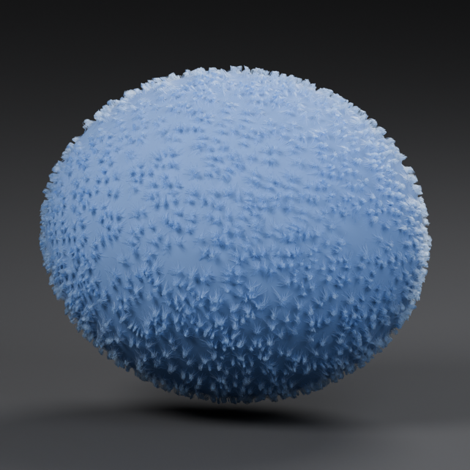
对应渲染图暂不可读取实际 GPU 凭证见下方链接。
实际 GPU 渲染 · 768 × 768 · 96 样本上限 · 渲染计时 6.37 秒；不含生成与 CPU 预检。
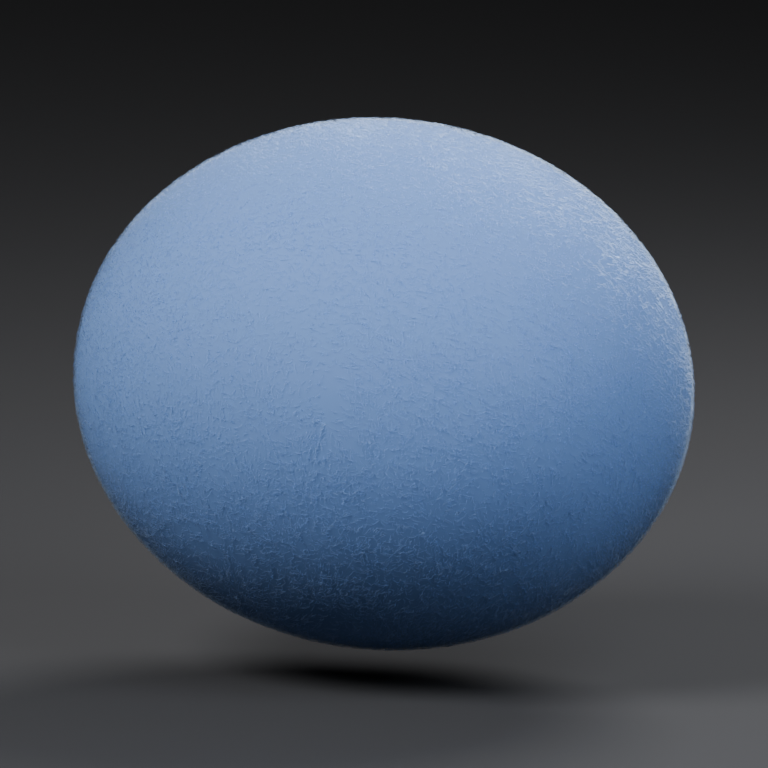
对应渲染图暂不可读取实际 GPU 凭证见下方链接。
实际 GPU 渲染 · 768 × 768 · 96 样本上限 · 渲染计时 3.88 秒；不含生成与 CPU 预检。
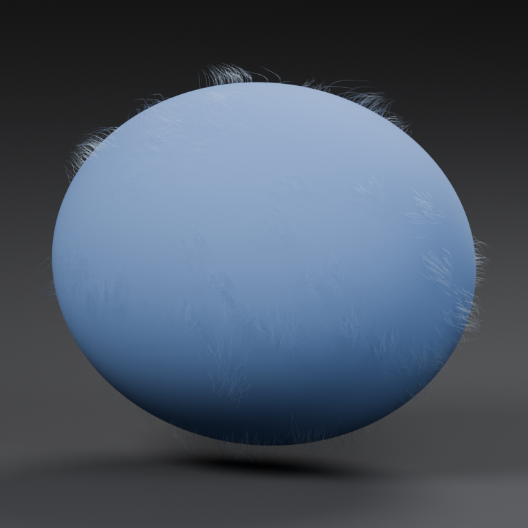
对应渲染图暂不可读取实际 GPU 凭证见下方链接。
实际 GPU 渲染 · 768 × 768 · 96 样本上限 · 渲染计时 3.79 秒；不含生成与 CPU 预检。
177,500 条毛丝。使用已经保存的 GN7 幅度系数 0.08 工程。
实际 GPU 渲染 · 768 × 768 · 96 样本上限 · 渲染计时 15.50 秒；不含生成与 CPU 预检。
175,000 条毛丝。只将飞毛对象的 hide_render 开启。
实际 GPU 渲染 · 768 × 768 · 96 样本上限 · 渲染计时 6.26 秒；不含生成与 CPU 预检。
GN8 只改变三种毛层对象的 hide_render。保存的毛丝几何与属性、半径 profile、材质、GN、灯光、镜头、底材与地面保持控制工程条件。各图均为 Blender 5.2.2 LTS / Cycles、768 × 768、96 样本上限，OptiX 使用 NVIDIA GeForce RTX 4070 Laptop GPU；渲染时间不含生成和 CPU 预检，也不用于比较制作流程速度。
四份 .json / .gn-report.json 保留 CPU 预检 rendered: false，真实 .render.json 另记 rendered: true。四案例使用同一冻结源，SHA 为 0c8c14cc9d13c9d436f00f5b2c0d14b3b8acc800a3ffc007325d22aa4fad3dd0；层的显示状态与原生毛数请读 layer_change。预检与渲染凭证分别保留，没有将预检改写成实际渲染。
GN8 独立分层工程检查 ↗：132/132 项通过，42 个输入文件 SHA 前后相同；四工程二次重新载入，三层 hide_render 是唯一变化，真实 GPU 凭证与 PNG 解码检查通过。工程检查支持分层条件成立，不把不同毛数的单层图当作公平质量 A/B，也不构成参考外观验收。
HIERARCHICAL GROOM / GN8 → GN9
从关闭飞毛的 GN8 出发，加入父级导向预处理。两张实际候选与控制图差异都小，仍偏密集短尖、扇状与短钩，没有明显形成厚圆的柔软卷团。
三图同为 175,000 条可见毛丝，飞毛的 2,500 条原生曲线仍保留在工程中，只隐藏渲染。球状小样与参考角色不同形、不同视角，只用于评毛料；两候选均未达到参考，完整角色主图继续保留 v6。
这轮没有获得明确的厚圆卷团。只读几何诊断显示，0.72 倍 XYZ 缩放同时降低了导向长度与毛冠；最终成束阶段的毛冠中位数比控制约低 21% / 24%。下一步拟尝试保留毛冠的紧凑三维回卷，尚无新候选图或效果结论。
GN8 → GN9 共同改变了两件事：非父级导向绕固定毛根缩放为旧形状的 0.72 倍，并加入 live 的父级 Clump 预处理。这是组合结构候选，不能将与 GN8 的差异单独归因于成束强度；soft 与 firm 之间才仅有父级强度 0.40 / 0.65 的变化。
实际 GPU 渲染 · 768 × 768 · 96 样本上限 · 渲染计时 6.26 秒；不含生成与 CPU 预检。
实际 GPU 渲染 · 768 × 768 · 96 样本上限 · 渲染计时 8.94 秒；不含生成与 CPU 预检。
实际 GPU 渲染 · 768 × 768 · 96 样本上限 · 渲染计时 8.68 秒；不含生成与 CPU 预检。
三图均为 768 × 768、96 样本上限。两张 GN9 的 .json / .gn-report.json 保留 CPU 预检 rendered: false；独立 .render.json 记录 rendered: true，GPU 渲染计时分别 8.9396373 秒 / 8.6768552 秒，不含生成与 CPU 预检。同一冻结源 SHA 为 9b2c4fe56ad084de6e4deb138fdfff7b6755e59a6ce0647d5c5f7c69f1e107f7；结构字段直接读取 hierarchy，不沿用旧候选的 metadata schema。
| 结构与控制范围 | GN8 noFA | GN9 soft | GN9 firm |
|---|---|---|---|
| 父级导向数 · 原有 2,657 条导向中的子集 | 无新增父级预处理 | 900 | 900 |
| 非父级原生导向形状缩放 | 1.00 | 0.72 | 0.72 |
| 父级成束强度 | 无 | 0.40 | 0.65 |
| 每父级的 fine 导向数 · 范围 / 中位数 | 不适用 | 1–9 / 3 | 1–9 / 3 |
| 每父级的最终子毛数 · 范围 / 中位数 | 不适用 | 25–260 / 88.5 | 25–260 / 88.5 |
| 可见外绒 / 底绒 · 原生飞毛保持隐藏 | 85,000 / 90,000 | 85,000 / 90,000 | 85,000 / 90,000 |
从保存的导向根位置选择 900 个空间分布的已有锚点作为父级；其原生形状保持。非父级导向先执行 root + 0.72 × (old − root)，再经官方 Clump 节点预处理。每条 fine 导向映射到最近父级；现有 85,000 条子毛仍使用原先的 fine 导向映射和末级 Curl / Clump / Profile 参数。900 父级属于原有导向，不是另加 900 条渲染毛丝。
父级强度沿长分布由项目作者设置：早段渐入，末端减弱，锚点因子为 0，并锁定根位置。父级缩放与 Clump 预处理均改变了求值形态；原生半径、原生外绒与子毛映射、底绒、隐藏飞毛、场景和末级外绒图固定，但求值外绒位置与半径会变化。没有 Catmull–Rom 实际弧长约束、实体体积测量或毛丝宽度接触求解。
Blender 5.2 Clump ↗、Curl ↗与 SideFX Hair Clump ↗是方法参考。父级 / 细级结构与上述沿长规则属于本项目制作，不是 Houdini 输出或论文算法的完整复现，也不因节点可编辑而视为外观验收通过。
在三个保存工程上测量，53,758 / 85,000 条最终求值子毛发生改变，31,242 条仍在固定父级锚点上。两级结构与缩放共同改变了外形；下表不能单独区分缩放和父级成束的贡献。均匀 XYZ 缩放会缩小高度，这轮结果也没有在真实图中形成明显厚圆卷团。
| 几何测量 | GN8 noFA | GN9 soft | GN9 firm |
|---|---|---|---|
| 求值导向弧长 / 配对控制 · 中位数 | 1.00000 | 0.72190 | 0.72260 |
| 最终 Clump 阶段毛冠 · 中位数，场景单位 | 0.0210805 | 0.0166152 · 约 −21% | 0.0159769 · 约 −24% |
| 发生位置变化的最终子毛 / 85,000 条 | 0 | 53,758 | 53,758 |
诊断为 16.63 秒只读 CPU 测量，4 个输入文件读取前后 SHA 相同；临时逐节点输出检查后恢复逐位一致。弧长采用 32 阶 Catmull–Rom 积分，毛冠是采样中心线到解析椭球的近似高度，不是逐像素可见性、真实毛丝宽度接触或实体体积。数值也没有标定为实物尺寸。
独立保存工程检查实际通过 141 / 141 项，28 个输入文件 SHA 前后相同，Blender exit 0。它确认两级映射、固定原生数据和场景、实际 GPU 凭证与 PNG，以及 soft / firm 仅改变父级强度；这是工程检查通过，不是外观验收。更正后的独立检查报告。
独立扰动 parent 1780 的控制点 6 沿 X 移动 0.002 场景单位，仅影响映射的 fine 导向 1780、1968 及 78 条子毛；集合之外、毛根、根半径均保持，还原后逐位相同。内部 Clump 的段长规则不等于历史 rest 或 Catmull–Rom 实际弧长守恒。
COMPACT RETURN COIL / GN8 → GN10
0.88 的轮廓锯齿减少、卷簇稍圆，但毛层压紧变平；0 出现更多开放粗钩，正面仍偏扇簇。两张实际图都没有形成参考的厚实柔软小卷团。
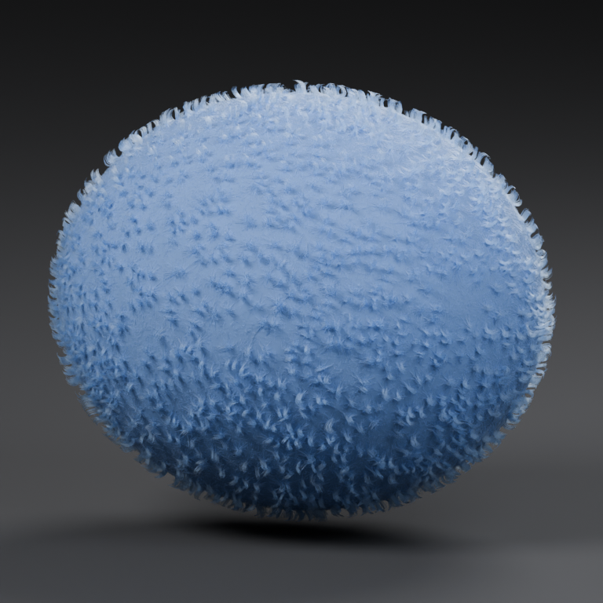
对应渲染图暂不可读取展开下方查看实际 GPU 凭证。
三图均为 768 × 768、96 样本上限、175,000 条可见毛丝。2,500 条飞毛只隐藏，工程仍保留；完整角色主图继续是 v6。球状小样用于比较毛料，不能当作参考角色的形体重建。
这轮显示了收拢与松开的取舍，尚未达到参考。下一制作重点是沿长松紧、束内宽度与间距，以及更细尺度的自然卷团，尚无该方案的新图；不继续把全局 Clump 强度扫描当成造型完成。
承接上方 GN9 的制作计划，本轮从保存的 GN8 no-flyaway 工程出发，重新制作 2,657 条三维回卷导向；没有沿用 GN9 的 0.72 倍 XYZ 缩短或父级预处理。新导向只沿法向调整尺度，目标是保留原导向的指定采样毛冠。该约束不保证最终求值子毛高度、弧长、像素外观或柔软程度。
实际 GPU 渲染 · 768 × 768 · 96 样本上限 · 渲染计时 6.26 秒；不含生成与 CPU 预检。
实际 GPU 渲染 · 768 × 768 · 96 样本上限 · 渲染计时 7.55 秒；不含生成与 CPU 预检。
实际 GPU 渲染 · 768 × 768 · 96 样本上限 · 渲染计时 9.77 秒；不含生成与 CPU 预检。
两候选的原生导向位置按位相同，彼此仅改变实际 typed modifier 输入 Socket_6：0.8799999952316284（float32 的 0.88）→ 0。官方 Clump 的原有连接与默认值保持，未用已连接 socket 的默认值冒充有效输入。两份预检 JSON 的 rendered 保持 false；独立 GPU receipt 均为 true，计时分别 7.5472766 / 9.7679356 秒，不含 CPU 生成和检查。
| 实际保存几何与输入 | GN8 noFA | GN10 · 0.88 | 同一导向 · 0 |
|---|---|---|---|
| 末级 Clump 有效因子 | 0.88 | 0.88 | 0 |
| 原生导向指定采样毛冠 · 中位数，场景单位 | 0.02539075 | 0.02539074 | 0.02539074 |
| 求值子毛指定采样毛冠 · 中位数，场景单位 | 0.02108049 | 0.01671717 | 0.02787186 |
| 原生导向弧长 / 配对 GN8 · 中位数 | 1.00000 | 1.72880 | 1.72880 |
| 求值子毛弧长 / 配对 GN8 · 中位数 | 1.00000 | 1.05204 | 1.04859 |
| 隐藏导向 / 可见外绒 / 可见底绒 | 2,657 / 85,000 / 90,000 | 2,657 / 85,000 / 90,000 | 2,657 / 85,000 / 90,000 |
导向采样毛冠的最大配对误差为 6.1527830 × 10−8 场景单位，小于 2 × 10−7 的制作容差；它没有约束求值子毛。回绕在空间上较紧凑，但导向配对弧长中位数增加约 73%，不能写成毛丝更短或弧长守恒。毛冠使用逐控制段 8 阶 Gauss–Legendre 节点及控制点的解析椭球近似高度；弧长使用 float32 控制点升为 float64 的均匀 Catmull–Rom、重复端点、32 阶积分。两者都是中心线几何口径，不是引擎弧长、实体体积、毛丝接触或像素可见率，也没有标定为实物毫米。
以保存毛根、椭球法向及旧导向切向建立 root-local 坐标系，使用三种回卷原型。相位末值为 5.05 / 5.30 / 5.55 弧度，横向宽度系数为 0.46 / 0.52 / 0.43，深度系数为 0.22 / 0.27 / 0.31，起根段系数为 0.18 / 0.22 / 0.20；各系数相对原导向采样毛冠。仅法向尺度经过 20 次二分匹配，横向分量保持作者路径，float32 保存后回填原根。
两图均沿用实际官方 Curl / Clump / Profile 链：Curl Factor 0.70、Radius 0.006、Frequency 0.85；Clump Shape 0.20、Tip Spread 0.003、内部 Preserve Length 开启；外接 Restore Factor 仍为 0；Profile 最小 / 最大半径因子为 0.55 / 1。原生外绒、导向根与半径、历史 rest_position、子毛映射、0.35 底绒、隐藏飞毛、材质、灯光、相机和渲染设置固定。新导向与末级输入会改变求值外绒位置及 Profile 派生半径，根半径按位保持。
这是本项目作者制作的三维回卷路径，实际通过 Blender 原生 Hair Curves 与官方节点求值。官方 Clump ↗、Curl ↗与 SideFX Hair Clump ↗提供制作思路；本轮没有运行 Houdini Accurate Bundling 或 Fractal Clumping，也不是论文算法的完整复现。
两份成功快照采用同一冻结源 SHA：b72713f128b68ad2b344216f22c34e3046a61e8f1933ed1909fb49d4cd74f5c8。预检报告明确记录原生导向与求值子毛的不同参数范围，不能沿用旧 D 预设字段解释本轮最终毛料。
独立保存工程检查实际通过 174 / 174 项，32 个跟踪输入文件 SHA 前后相同，零错误，并逐候选完成两次真实重载。它确认原生数据和场景保留、同一导向、有效输入 0.88 / 0、实际求值差异，以及 GPU receipt 与 PNG；这是工程检查通过，不是参考外观验收。独立检查报告。
独立扰动 guide 1328 的控制点 6 沿 X 移动 float32 的 0.002 场景单位，两候选均仅使实际映射的 42 / 42 条子毛改变；集合外、毛根与根半径保持，恢复后全场景按位一致。检查报告 SHA：a19cf24a15bf4aeb5362d75d8f886addf6402938782183f4c7c0d485b9cb5bc3。独立验证器。
ALONG-LENGTH CLUMP / GN10 → GN11
GN11 顶缘比 0.88 略立起，比 0 收回部分粗开放钩环；正面粗扇簇仍明显。与 0.88 的肉眼差异有限，尚未形成参考中的细密柔软小卷绒。
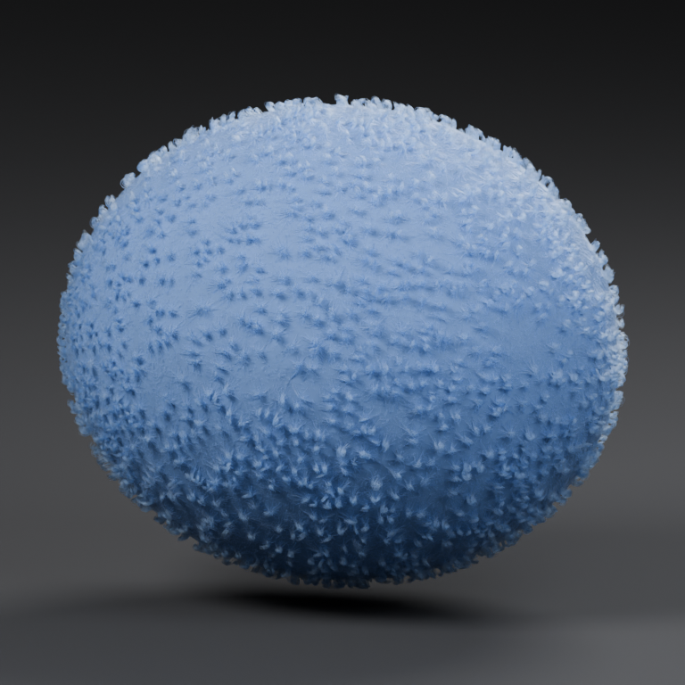
对应渲染图暂不可读取展开下方查看实际 GPU 凭证。
三图均为 768 × 768、96 样本上限、175,000 条可见毛丝；使用同一组回卷导向、材质、灯光与镜头。飞毛保持隐藏，完整角色主图仍为 v6。
本轮沿长输入确实改变了求值毛形和实际轮廓，但毛冠更高没有自动带来更宽、更柔软的卷团。现有粗扇状纹理与参考仍有差距。
沿用 GN10 的冻结导向、控制工程与两端渲染凭证。本轮唯一制作控制是末级 Clump 的外部沿长 Factor 分布，新增五个外层节点；原生毛形、半径、rest、映射与分层，以及官方 Curl / Clump / Profile 内部节点组、场景和渲染设置保持。求值外绒位置与 Profile 派生半径会响应变化。
实际 GPU 渲染 · 768 × 768 · 96 样本上限 · 渲染计时 12.42 秒；不含生成与 CPU 预检。
成功源 SHA：145239a928aeb057a7470ddeb81ff04612a2e7b71028e0738854ba471141247a。预检 JSON 保留 rendered: false；独立 receipt 记录 rendered: true 和 12.4157428 秒实际 GPU 时间。早期 live1–6 中止尝试的源与日志保留，没有用它们冒充有效工程或渲染。
s 是官方 Curl 输出、Clump 之前的 joined Curves 上捕获的 Spline Parameter Factor，域为 POINT，表示该阶段实际样条的归一长度；不是 12 个控制点的索引。FloatCurve 使用 VECTOR handles，控制点为 (0,0), (0.18,0.15), (0.40,0.25), (0.65,0.25), (0.85,0.75), (1,1)；经 0–1 限幅后乘以原 modifier 的 0.88，送入 Clump Factor。
外部输入为 0.88 × w(s)。官方 Shape 0.20 仍独立施加沿长 mask，Tip Spread 0.003、内部 Preserve Length 和下游 Profile 保持；该外部字段不是最终点位移的线性比例。实际字段已采样核对；制作预检在正确刷新节点后，用常量 w=1 按位重现 GN10 0.88；独立检查另以原 Socket_6 直接旁路 Factor 接线，按位重现并恢复原结果。
SideFX Hair Clump 官方资料 ↗明确将 Clump Profile 用于沿长度控制紧度，本轮借鉴这一制作原则，在 Blender 原生 Hair / 官方节点管线上添加作者字段。考虑 width 以避免中心收缩的 Accurate Bundling 是另一项方法，本轮没有运行 Houdini，也未实现该宽度接触求解或 Fractal Clumping。
| 制作报告的求值代理 · 场景单位 | GN10 · 0.88 | GN11 · 沿长 | GN10 · 0 |
|---|---|---|---|
| 采样毛冠 · 中位数 | 0.01671717 | 0.02025096 | 0.02787186 |
| 控制点索引 6 · 横向 major std 中位数 | 0.00442197 | 0.00351780 | 0.00384399 |
| 控制点索引 11 · 横向 major std 中位数 | 0.00446872 | 0.00250061 | 0.00426054 |
上表来自制作报告。毛冠是保存 float32 控制点的 Catmull–Rom 中心线在 8 阶逐段采样及控制点上的解析椭球近似高度。横向统计在同一实际 guide 映射、每组至少 8 条子毛的 2,644 组上，将子毛中心线投影到固定 guide 控制点切向的法平面，再取协方差较大特征值的平方根（制作统计使用分母 n）；索引从 0 计，位置并非匹配的弧长位置。这些是中心线代理，不是实体束宽、体积、毛丝接触、像素可见率或柔软评分。GN11 毛冠提高，但两个索引处的横向代理反而下降，不能写成中段更宽或体积保留。
独立检查使用另一口径：每组至少 4 条子毛的 2,655 组、协方差分母 n−1，计算固定控制点索引与 guide 切向法平面的横向 RMS；其结果也显示中段收窄。该 RMS 与上表的 major std 不混用，均不能当作实体体积或视觉评分。
独立保存工程检查：134 / 134 通过，43 个输入 SHA 前后不变，完成两次实际重载；源、工程、PNG 与真实 GPU 凭证均已实读。85,000 条外绒全部响应，原生数据、根、根半径、guide、rest、映射、底绒、隐藏飞毛与场景固定。guide 1328 的控制点 6 扰动只影响实际映射的 42 / 42 条子毛，集合外与恢复后逐位相同。独立检查报告 · 独立检查脚本。报告 SHA：9b2f6380da8bf33f4b020b8932e993410483fbb5871078b651f7ce94d8baf14d。这验证工程与因果范围，不是参考外观验收。
实际外部 Factor 与 float32 的 0.88 × 实际节点权重按位相符。VECTOR CurveMapping 的实际查表结果相对理想线性插值最大误差为 0.00234276，使用 0.003 检查容差；s 末端误差使用 10−7、w 与 Factor 末端使用 10−6 容差。早期常量 w=1 复现失败来自未刷新节点缓存；最终成功工程的正确更新与旁路实测已纠正这一判断，不能据早期结果声称引擎无法复现。
CURL VARIATION / GN11 → GN12
三图整体很接近，A、B 只有局部细丝与边缘变化；正面粗扇簇和横向层纹仍在。本轮额外偏移没有解决主要结构，尚未得到参考的松厚细卷绒。
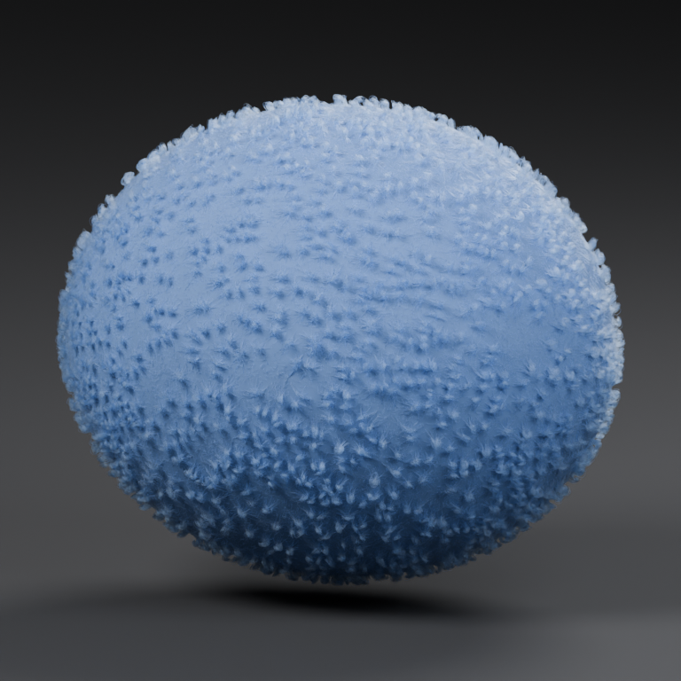
对应渲染图暂不可读取工程与实际渲染凭证见展开证据。
三图均为 768 × 768、96 样本上限、175,000 条可见毛丝；沿用同一 GN11 原生毛形、导向、映射、材质、灯光、镜头与沿长 Clump 配方。飞毛仍隐藏，完整角色主图仍为 v6。
两种偏移范围均真实生效，但外观收益有限。下一项制作方向尚未实施：缩小实际空间毛束尺度、错开长度并重新梳理导向；整体方位可作隔离项，不能用随机相位替代结构改造。
控制凭证沿用 GN11 沿长收束。A 对 joined Curves 全部曲线施加 Random Offset=1；B 由 CURVE 域的 is_guide 得到 1−is_guide，只对子毛施加。A 允许 post-Curl 导向目标响应；B 以实际求值验证该目标保持，隔离束内相位变化。
实际 GPU 渲染 · 768 × 768 · 96 样本上限 · 渲染计时 9.00 秒；不含生成与 CPU 预检。
实际 GPU 渲染 · 768 × 768 · 96 样本上限 · 渲染计时 8.79 秒；不含生成与 CPU 预检。
两候选共用冻结源 SHA：000bfcc5cff1c3680e4732d4c05759b50354ca37da59b6d8a9aa068bf72e963d · 本轮生成脚本。CPU 预检记录 rendered: false；独立实际 receipt 记录 rendered: true，A / B 分别为 9.0001053 / 8.7872433 秒。初次中止的旧 live 源保留，未当作有效图或工程引用。
官方 Curl 内部以 guide ID 生成共同随机相位，另一路按各曲线 ID 生成随机量并乘 Random Offset；GN11 该额外输入为 0。两候选保持 Seed 0、Curl Factor 0.70、Radius 0.006、Frequency 0.85、Curl Start 0.15 和 radius Start / End 0.70。0.85 是节点输入；本机资产内部将其乘以累计控制段长、3 与 2π，不能写成每条 0.85 圈。Random Offset 不标为弧度。
GN11 的沿长 Clump 函数、官方 Shape、Preserve Length、Tip Spread 与 Profile 配方固定；它们作用于变化后的几何，实际捕获长度参数、权重、派生半径与最终外绒仍可能响应。设置固定不等于最终几何固定。
Blender Curl Hair Curves ↗提供按曲线变化的偏移；Blender Clump Hair Curves ↗使用实际导向映射。SideFX Hair Clump ↗的宽度约束与更小层级结簇是方法参照；本轮是 Blender 原生节点的项目候选，未运行 Houdini、宽度接触或物理求解。
| 实际捕获 · Curl 后 / Clump 前 | GN11 | A · 全部 | B · 子毛 |
|---|---|---|---|
| 85,000 条子毛 · Random Offset | 全部 0 | 全部 1 | 全部 1 |
| 2,657 条导向 · Random Offset | 全部 0 | 全部 1 | 全部 0 |
| post-Curl 导向位置对 GN11 | 控制 | 变化 | 逐位保持 |
| 最终外绒 · 响应曲线数 | 控制 | 85,000 / 85,000 | 85,000 / 85,000 |
范围字段在实际 joined Curves 的 CURVE 域读取，并核对 is_guide 为 BOOLEAN；87,657 条求值曲线包含 85,000 条子毛和 2,657 条导向。两组 post-Curl 导向半径均保持；B 的导向位置也逐位固定。制作报告的中心线采样毛冠中位数仅从 GN11 的 0.02025096 变为 A 的 0.02029814、B 的 0.02031098（场景单位）；这是解析椭球上的 Catmull–Rom / 8 阶采样代理，不是毛束体积、像素可见率或柔软评分，不据此宣称改善。
首次 v12 失败报告与当时的独立检查源码原样保留：两项额外的 post-Curl 中间根坐标逐位等于基线断言失败。中间阶段位移与下游 RootLock 后的最终根分别记录，不能将最终根固定扩展为全过程固定。
重新量测中间阶段：A、B 的 post-Curl 子毛根各有 51,175 / 85,000 条与基线存在逐位差，最大欧式位移均约 6.3220273 × 10−8 场景单位；A 的导向根有 1,142 / 2,657 条差异，最大约 1.6660005 × 10−8，B 导向根为 0 条差异。记录该真实位移，不仅凭数值小就归因为舍入，也不与最终输出固定根混用。
独立保存工程检查：138 / 138 通过，64 个输入 SHA 前后保持。实际 CURVE 字段确认 A 的 guide / child 均为 1，B 的 guide 为 0、child 为 1；A 的 2,657 条 post-Curl 导向改变，B 的导向位置与半径全部逐位保持，两组最终 85,000 条子毛均响应。原生数据与最终根、根半径逐位固定；最终位置根锁由下游 RootLock 恢复，根半径固定另经实际测量。成功的独立检查报告 v12-r2 · 独立检查脚本。报告 SHA：cd624cc4750d79d34f4424ed53ab9c8deecc748b173b320456b1cdbcb0636208。这验证实际输入、工程与因果范围，不代表参考视觉通过。
COIL ORIENTATION / GN11 → GN13
顶部与边缘突起、下侧局部卷向有变化，整体仍很接近 GN11。正面宽扇簇和横向层纹持续，尚未形成参考的松厚细卷团。
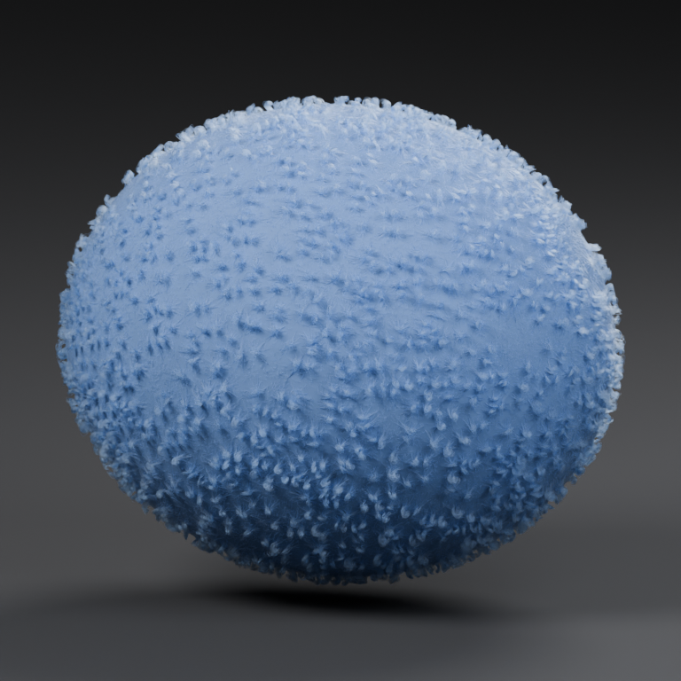
对应渲染图暂不可读取实际工程与渲染凭证见展开证据。
两图均为 768 × 768、96 样本上限、175,000 条可见毛丝；外绒数量、根与映射，底绒、隐藏飞毛、材质、灯光、镜头及沿长 Clump 配方保持。完整角色主图仍为 v6。
整体方位确实改变了求值毛形，但本轮外观收益有限。更细的空间分组、束内长度错落与新的导向梳理仍未实施，不能把本组当作参考达标。
控制工程与沿长 Clump 配方沿用 GN11。本轮为项目作者的导向梳理选择：完整回卷 guide 围绕各自固定根的解析椭球法线作刚体方位旋转；复用成熟的 guide-driven 官方 Curl / Clump 与 Cycles / Chiang 管线，不将它写成官方 Curl 参数或论文算法。
实际 GPU 渲染 · 768 × 768 · 96 样本上限 · 渲染计时 10.35 秒；不含生成与 CPU 预检。
冻结源 SHA：94018212d0c0c5cbc063f71158cc92d5a88b59cb6b69ca374ce7cdb7a3296bcb。CPU 预检保留 rendered: false；实际 GPU receipt 为 rendered: true，记录 10.3472896 秒。
2,657 根导向按原生顺序，以 np.random.default_rng(12013) 的 PCG64 独立生成 uniform(0,2π) 方位角。令 v=g−root，轴为 n=normalize(root/[0.64,0.43,0.54]²)；采用 g′=root+v*cosθ+(n×v)*sinθ+n*(n·v)*(1−cosθ)。在 float64 中计算，转存 float32，并回填原根坐标位。只改 guide position，原生 rest、半径、ID 与映射保持；新角度种子与旧毛丝生成随机样本分开。
对每根 guide 使用同一个正交旋转，理论上保持其欧氏形状、根法向投影与报告指定的均匀 Catmull–Rom 连续弧长；float32 保存后的误差另外量测。椭球的切向曲率随方位变化，表面毛冠并不因此固定。子毛根与映射保持，经过 Curl / Clump 的求值子毛也不是整体刚体旋转，其弧长与下游 Profile 派生半径仍可能变化。本轮不作二次高度归一。
制作报告实测：保存 float32 后，根法向投影最大绝对误差为 3.2000046 × 10−8 场景单位；原生 guide 的指定 Catmull–Rom / 32 阶积分最大弧长绝对误差为 9.8843080 × 10−8 场景单位，相对漂移最大 1.4060303 × 10−6。这里子毛长度采用逐条配对比值，不与两组分布的中位数之比混用。最终子毛逐条配对弧长比范围约 0.648767–1.594886，中位数 1.000589，不能借 guide 刚体旋转声称子毛长度保持。所有弧长均为保存控点、重复端点的均匀 Catmull–Rom 数值模型，不称 Cycles 引擎精确弧长；毛冠为解析椭球采样中心线代理，不是实体体积、可见率或柔软评分。
可以参考 Blender Rotate Hair Curves 官方资料 ↗中的曲线方位控制类别。本轮实际落地为作者的刚体 Rodrigues 原生导向变换，后续官方 Curl / Clump 节点保持；没有运行 Houdini、宽度接触或物理求解。
固定的是原生半径与最终根半径；下游 Profile 的非根派生半径有 869,596 / 1,020,000 个点响应，最大绝对差 3.7767983 × 10−5 场景单位。中间 post-Curl 有 1 条子毛根相对基线变化 1.8626451 × 10−9，导向根为 0 条差异；最终根逐位固定与中间阶段分别记录。
独立保存工程检查：119 / 119 通过，75 个输入 SHA 前后保持。2,657 根 guide 的保存位置逐位匹配独立 seed 12013 的 Rodrigues 重构；原生根、半径、rest、映射、GN11 节点图、Profile 配方、底绒、隐藏飞毛与场景保持。85,000 条最终子毛均响应，最终根和根半径逐位固定；guide 1328 探针仅影响实际映射的 42 / 42 条子毛，集合外固定、恢复逐位相同，并通过两次保存工程重载。独立检查报告 · 独立检查脚本。报告 SHA：40d1857c15ee0ab369925957256d64e0368b13b34c777fda48d2b538b3f62f62。这验证工程与变化范围，不是参考外观验收。
SPATIAL BUNDLE SCALE / GN11 → GN14
两组都明显细化了 GN11 的宽扇片；半宽组只略更紧细，额外收益有限。中部层纹、下侧顺向细钩和压实感仍在，尚未形成参考的松厚细卷团。
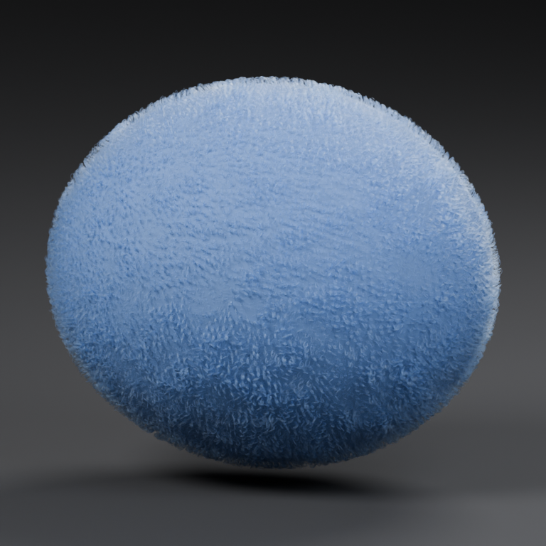
对应渲染图暂不可读取实际工程与GPU凭证见展开证据。
同为 768 × 768、96 样本上限、175,000 条可见毛丝。细分分组没有增加外绒数量；灯光、镜头、材质、底绒、隐藏飞毛和 GN11 沿长 Clump 配方保持。
本轮样片可辨的收益来自更细空间束；半宽本身没有明显额外收益。配方已迁移到完整星仔，实图与旧 v6 的差别见页首三图；完整角色仍未达到参考松厚卷团，不能把球形样片的改善当作参考达标。
A 从保存的 GN11 出发，保留原 2,657 个 guide 根，并从现有外绒根以确定性最远点选择新增 7,971 个根。复制最近旧 guide 的根局部曲线，按新旧曲面法线作最短旋转运输，再对 85,000 根子毛实际重算最近根映射。因此 A 相对 GN11 是新增导向与重新分组的结构方案，不是单个节点幅度变化。
B 从 A 的保存工程出发，保持同一 10,628 个根、映射、原生 rest 与半径。令 v=g−root，n=normalize(root/[0.64,0.43,0.54]²)，仅改 g′=root+n*(n·v)+0.5*(v−n*(n·v))，float64 计算后转存 float32、回填原根位。这保持指定局部法向分量，不能据此声称椭球毛冠、实际子毛弧长或束体积恒定；本轮没有高度或弧长二次归一。
实际分组的子毛数为 1–29，中位数 7，空组 0。根云在各 guide 切平面的最大配对跨度中位数由 GN11 的 0.04606 降至 0.01684 场景单位；这是保存根的局部几何代理，不是实体束宽、接触解算或画质评分。现有官方 Curl / Clump 管线继续求值；本项目的分组与导向制作不等于运行 Houdini Accurate Bundling、Fractal Clumping 或论文算法。
实际 GPU 渲染 · 768 × 768 · 96 样本上限 · 8.06 秒；不含 CPU 准备。
实际 GPU 渲染 · 768 × 768 · 96 样本上限 · 7.94 秒；不含 CPU 准备。
两组冻结源 SHA：fd49cc328e6a43f8af93c3f2cf85f9d3eed479e2bad983d32ee20b36bc49d137。本轮制作脚本；CPU 预检保持 rendered: false，真实 GPU 凭证另存 rendered: true。工程可复查不等于参考外观通过。
独立保存工程检查：140 / 140 通过。从保存工程独立重构最远点根选择、法线运输与半宽公式，核对实际最近根映射、原生字段、固定外绒根与根半径，并重新加载两份工程；GPU 凭证与实际 PNG 尺寸、非空像素、文件 SHA 一致。A / B 之间的指定改动确实进入最终子毛。独立检查报告 · 独立检查脚本 · 检查源快照。报告 SHA：270078f238ff58bad034de341f2869de5a89b413cbefc4efd9e93e99f36961c1。这验证实际改动与复查能力，不代表参考外观通过。
03 / PARAMETERS
数值来自本轮生成脚本与同名 JSON。长度与卷曲尺度使用 Blender 场景单位，尚未标定为实物尺寸。
| 毛丝预设 | A · 直短绒 | B · 微卷绒 | C · 较长卷束 | D · 短卷绒候选 |
|---|---|---|---|---|
| 基础长度 · length | 0.025 | 0.047 | 0.065 | 0.046 |
| 卷曲尺度 · curl | 0.0018 | 0.0055 | 0.010 | 0.009 |
| 卷曲圈数 · turns | 0.70 | 1.15 | 1.60 | 1.0 |
| 下垂系数 · lean | 0.35 | 0.65 | 0.75 | 0.50 |
| 聚束系数 · clump | 0.15 | 0.38 | 0.60 | 0.60 |
| 纤维底色 · sRGB | #87a9e6 | #87a9e6 | #87a9e6 | #6b8bd4 |
基础长度按每丝 0.64–1.32 倍随机变化；短底绒采用 0.42 倍长度，飞毛采用 1.5 倍长度。卷曲参数控制曲线扰动，其数值不等于最终毛束外径。
Catmull–Rom Hair Curves，每根身体毛丝 12 个控制点。四组样片各含 90,000 根短底绒、85,000 根表层毛、2,500 根飞毛；完整角色为 669,000 根身体毛与 90,000 根帽毛。基础半径 0.00024–0.00040，向末端收细。
Principled Hair BSDF · Chiang · 直接颜色。四种毛料中的 A/B/C 为 #87a9e6，D 与完整导向候选为 #6b8bd4；纵向粗糙度 0.48、径向 0.55、随机粗糙度 0.13、Coat 0。面光源功率 480 / 150 / 200 W，尺寸 3.3 / 3.2 / 2.8 场景单位。
正交相机位置 (1.3, −4.5, 0.95)，朝向原点，正交尺度 1.56。Cycles OptiX，AgX / Medium High Contrast；开启 OpenImageDenoise。实际分辨率、采样与耗时逐份读取 JSON。
从项目目录运行，使用新的 tag 保存新结果： blender -b --python tooling/blender/plush_cycles.py -- --kind swatch --variant reference --resolution 768 --samples 96 --tag review-1 blender -b --python tooling/blender/plush_cycles.py -- --kind character --variant reference --resolution 1536 --samples 384 --tag review-1 blender -b --python tooling/blender/plush_cycles.py -- --kind character --variant reference --resolution 1024 --samples 128 --angle 25 --tag review-1-angle25 A/B/C 样片分别使用 --variant velvet / fleece / teddy。 v3 六份输出的版本源快照与 SHA-256 保存在同名文件和 JSON 中。 完整 v6 的导向、soft-tip 分布与几何弧长归一使用独立实验脚本，保存到新的 tag： blender -b --python tooling/blender/plush_groom_ab.py -- --mode curve --profile soft-tip --preserve-arc-length --kind character --variant reference --resolution 1536 --samples 384 --tag review-guide-length-1 实验输出同时保存冻结的 v3 基线与当时实验逻辑的两份源快照。 可调项：--resolution / --samples / --density / --angle / --tag 请采用目标文件 JSON 中的 resolution、samples、angle_degrees 和实际毛丝数量。 生成器默认值不一定等于每一份交付文件的渲染设置。
04 / METHOD & SOURCES
原生曲线与材质可在 Blender 检查和编辑；v6 及 A/B/C/D/E 为脚本导向实验，没有 live Geometry Nodes groom 树。独立 GN1/GN2/GN3/GN4/GN5 小样另有实际节点链与可编辑导向；这些工程均未建立曲线表面附着或交互梳理笔刷，没有自动图像重建、毛发动力学或多视图训练。网页表示和展示方式需要另行制作与验证。